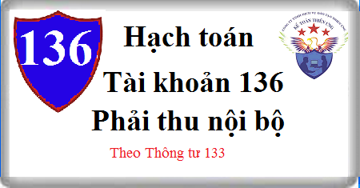

Cách hạch toán Tài khoản 136 theo Thông tư 133, cách hạch toán phải thu nội bộ như: Hạch toán khi xuất hàng cho chi nhánh, khi cấp vốn kinh doanh cho nhánh, kết cấu, nội dung Tài khoản 136 - Phải thu nội bộ
1. Nguyên tắc kế toán Tài khoản 136 - Phải thu nội bộ
a) Tài khoản này dùng để phản ánh các khoản nợ phải thu và tình hình thanh toán các khoản nợ phải thu của doanh nghiệp (đơn vị cấp trên) với đơn vị hạch toán phụ thuộc (đơn vị cấp dưới) hoặc giữa các đơn vị hạch toán phụ thuộc với nhau. Các đơn vị cấp dưới là đơn vị hạch toán phụ thuộc nhưng có tổ chức công tác kế toán như chi nhánh, xí nghiệp, nhà máy...
b) Nội dung các khoản phải thu nội bộ phản ánh vào tài khoản 136 bao gồm:
- Ở đơn vị cấp trên:
+ Vốn, quỹ hoặc kinh phí đã giao, đã cấp cho cấp dưới;
+ Các khoản cấp dưới phải nộp lên cấp trên theo quy định;
+ Các khoản nhờ cấp dưới thu hộ;
+ Các khoản đã chi, đã trả hộ cấp dưới;
+ Các khoản đã giao cho đơn vị cấp dưới để thực hiện khối lượng giao khoán nội bộ và nhận lại giá trị giao khoán nội bộ;
+ Các khoản phải thu vãng lai khác.
- Ở đơn vị cấp dưới hạch toán phụ thuộc:
+ Các khoản được đơn vị cấp trên cấp nhưng chưa nhận được;
+ Giá trị sản phẩm, hàng hóa dịch vụ chuyển cho đơn vị cấp trên hoặc các đơn vị nội bộ khác để bán;
+ Doanh thu bán hàng hóa, cung cấp dịch vụ cho các đơn vị nội bộ;
+ Các khoản nhờ đơn vị cấp trên hoặc đơn vị nội bộ khác thu hộ;
+ Các khoản đã chi, đã trả hộ đơn vị cấp trên và đơn vị nội bộ khác;
+ Các khoản phải thu nội bộ vãng lai khác.
c) Tài khoản 136 phải hạch toán chi tiết theo từng đơn vị cấp dưới có quan hệ thanh toán và theo dõi riêng từng khoản phải thu nội bộ. Doanh nghiệp cần có biện pháp đôn đốc giải quyết dứt điểm các khoản nợ phải thu nội bộ trong kỳ kế toán.
d) Cuối kỳ kế toán, phải kiểm tra, đối chiếu và xác nhận số phát sinh, số dư Tài khoản 136 "Phải thu nội bộ", Tài khoản 336 "Phải trả nội bộ" với từng đơn vị cấp dưới có quan hệ theo từng nội dung thanh toán. Tiến hành thanh toán bù trừ theo từng khoản của từng đơn vị cấp dưới hạch toán phụ thuộc hoặc đơn vị nội bộ khác, đồng thời hạch toán bù trừ trên 2 Tài khoản 136 “Phải thu nội bộ" và Tài khoản 336 "Phải trả nội bộ" (theo chi tiết từng đối tượng). Khi đối chiếu, nếu có chênh lệch, phải tìm nguyên nhân và điều chỉnh kịp thời.
2. Kết cấu và nội dung Tài khoản 136 - Phải thu nội bộ
Bên Nợ:
- Số vốn kinh doanh đã giao cho đơn vị cấp dưới;
- Các khoản đã chi hộ, trả hộ đơn vị cấp trên hoặc các đơn vị nội bộ khác;
- Số tiền đơn vị cấp trên phải thu về, các khoản đơn vị cấp dưới phải nộp lên;
- Số tiền đơn vị cấp dưới phải thu về các khoản cấp trên phải giao xuống;
- Số tiền phải thu về bán sản phẩm, hàng hóa, dịch vụ giữa các đơn vị nội bộ với nhau;
- Các khoản phải thu nội bộ khác.
Bên Có:
- Thu hồi vốn, quỹ ở đơn vị cấp dưới;
- Số tiền đã thu về các khoản phải thu trong nội bộ;
- Bù trừ phải thu với phải trả trong nội bộ với cùng một đối tượng.
Số dư bên Nợ: Số nợ còn phải thu ở các đơn vị nội bộ.
Tài khoản 136 - Phải thu nội bộ, có 2 tài khoản cấp 2:
- Tài khoản 1361 - Vốn kinh doanh ở đơn vị trực thuộc: Tài khoản này chỉ mở ở đơn vị cấp trên để phản ánh số vốn kinh doanh hiện có ở các đơn vị cấp dưới hạch toán phụ thuộc do đơn vị cấp trên giao.
- Tài khoản 1368 - Phải thu nội bộ khác: Phản ánh tất cả các khoản phải thu khác giữa các đơn vị nội bộ ngoài vốn kinh doanh ở đơn vị trực thuộc.
3. Cách hạch toán phải thu nội bộ Tài khoản 136
3.1. Tại đơn vị cấp dưới không có tư cách pháp nhân hạch toán phụ thuộc:
a) Khi chi hộ, trả hộ doanh nghiệp cấp trên và các đơn vị nội bộ khác:
Nợ TK 136 - Phải thu nội bộ (1368)
Có các Tài khoản 111, 112.
b) Căn cứ vào thông báo của doanh nghiệp cấp trên về số quỹ khen thưởng, phúc lợi được cấp, ghi:
Nợ TK 136 - Phải thu nội bộ (1368)
Có TK 353 Quỹ khen thưởng, phúc lợi.
c) Khi bán sản phẩm, hàng hóa, cung cấp dịch vụ cho các đơn vị trong nội bộ doanh nghiệp, tùy thuộc vào đặc điểm hoạt động và phân cấp của từng đơn vị:
- Trường hợp đơn vị hạch toán phụ thuộc được phân cấp ghi nhận doanh thu, ghi:
Nợ TK 136 - Phải thu nội bộ (1368)
Có TK 511 - Doanh thu bán hàng và cung cấp dịch vụ (chi tiết giao dịch bán hàng nội bộ)
Có TK 333 - Thuế và các khoản phải nộp Nhà nước.
Đồng thời ghi nhận giá vốn, ghi:
Nợ TK 632 - Giá vốn hàng bán
Có các Tài khoản 154, 155... hoặc
Có Tài khoản 156 hàng hóa.
- Trường hợp đơn vị hạch toán phụ thuộc không được phân cấp ghi nhận doanh thu, giá trị sản phẩm, hàng hóa, dịch vụ cung cấp nội bộ được phản ánh là khoản phải thu nội bộ, ghi:
Nợ TK 136 - Phải thu nội bộ (1368)
Có các TK 154, 155, 156
Có TK 333 - Thuế và các khoản phải nộp Nhà nước.
đ) Khi nhận được tiền hoặc vật tư, tài sản của cấp trên hoặc doanh nghiệp nội bộ khác thanh toán về các khoản phải thu, ghi:
Nợ các Tài khoản 112, 111, 152, 153,...
Có TK 136 - Phải thu nội bộ (1368).
e) Bù trừ các khoản phải thu nội bộ với các khoản phải trả nội bộ của cùng một đối tượng, ghi:
Nợ TK 336 Phải trả nội bộ (3368)
Có TK 136 - Phải thu nội bộ (1368).
3.2. Hạch toán ở doanh nghiệp cấp trên
a) Khi doanh nghiệp cấp trên giao vốn kinh doanh cho đơn vị cấp dưới không có tư cách pháp nhân hạch toán phụ thuộc:
- Trường hợp giao vốn bằng tiền, ghi:
Nợ TK 1361 - Vốn kinh doanh ở các đơn vị trực thuộc
Có các TK 111, 112.
- Trường hợp giao vốn bằng TSCĐ, ghi:
Nợ TK 136 - Phải thu nội bộ (giá trị còn lại của TSCĐ) (1361)
Nợ TK 214 Hao mòn TSCĐ (giá trị hao mòn của TSCĐ)
Có Tài khoản 211 Tải sản cố định hữu hình (nguyên giá).
b) Trường hợp đơn vị không có tư cách pháp nhân hạch toán phụ thuộc phải hoàn lại vốn kinh doanh cho doanh nghiệp cấp trên, khi nhận được tiền do đơn vị hạch toán phụ thuộc nộp lên, ghi:
Nợ các TK 111, 112,....
Có TK 136 - Phải thu nội bộ (1361).
c) Khi bán sản phẩm, hàng hóa, cung cấp dịch vụ cho các đơn vị trong nội bộ doanh nghiệp, tùy thuộc vào đặc điểm hoạt động và phân cấp của từng đơn vị, doanh nghiệp có thể ghi nhận doanh thu tại thời điểm chuyển giao hàng hóa dịch vụ cho các đơn vị hạch toán phụ thuộc hoặc tại thời điểm khi đơn vị hạch toán phụ thuộc bán hàng hóa, cung cấp dịch vụ ra bên ngoài:
- Trường hợp doanh nghiệp ghi nhận doanh thu tại thời điểm chuyển giao hàng hóa, dịch vụ cho đơn vị hạch toán phụ thuộc, ghi:
Nợ TK 136 - Phải thu nội bộ (1368)
Có TK 511 - Doanh thu bán hàng và cung cấp dịch vụ (chi tiết giao dịch bán hàng nội bộ)
Có TK 333 Thuế và các khoản phải nộp Nhà nước.
- Trường hợp doanh nghiệp không ghi nhận doanh thu tại thời điểm chuyển giao hàng hóa, dịch vụ cho đơn vị hạch toán phụ thuộc:
+ Khi chuyển giao hàng hóa, dịch vụ, ghi:
Nợ TK 136 - Phải thu nội bộ (1368)
Có các TK 154, 155, 156 (giá vốn sản phẩm, hàng hóa)
Có TK 333 - Thuế và các khoản phải nộp Nhà nước (nếu có).
+ Khi đơn vị hạch toán phụ thuộc thông báo đã tiêu thụ được sản phẩm, hàng hóa, dịch vụ cho bên thứ ba bên ngoài doanh nghiệp, kế toán ghi doanh thu, ghi:
Nợ TK 136 - Phải thu nội bộ (1368)
Có TK 511 - Doanh thu bán hàng và cung cấp dịch vụ
Đồng thời ghi nhận giá vốn, ghi:
Nợ TK 632 - Giá vốn hàng bán
Có TK 136 - Phải thu nội bộ (1368).
d) Khoản phải thu về lãi của hoạt động sản xuất, kinh doanh, hoạt động khác ở các đơn vị cấp dưới, ghi:
Nợ TK 136 - Phải thu nội bộ (1368)
Có TK 421 Lợi nhuận sau thuế chưa phân phối.
đ) Khi chi hộ, trả hộ các đơn vị cấp dưới hạch toán phụ thuộc, ghi:
Nợ TK 136 - Phải thu nội bộ (1368)
Có các TK 111, 112,....
e) Khi nhận được tiền do đơn vị cấp dưới nộp lên về tiền lãi kinh doanh, thanh toán các khoản đã chi hộ, trả hộ đơn vị cấp dưới, ghi:
Nợ các TK 111, 112,...
Có TK 136 - Phải thu nội bộ (1368).
g) Bù trừ các khoản phải thu nội bộ với các khoản phải trả nội bộ của cùng một đối tượng, ghi:
Nợ TK 336 - Phải trả nội bộ (3368)
Có TK 136 - Phải thu nội bộ (1368).
------------------------------------------------------
